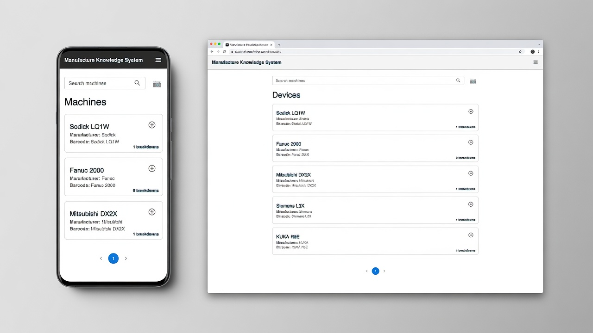
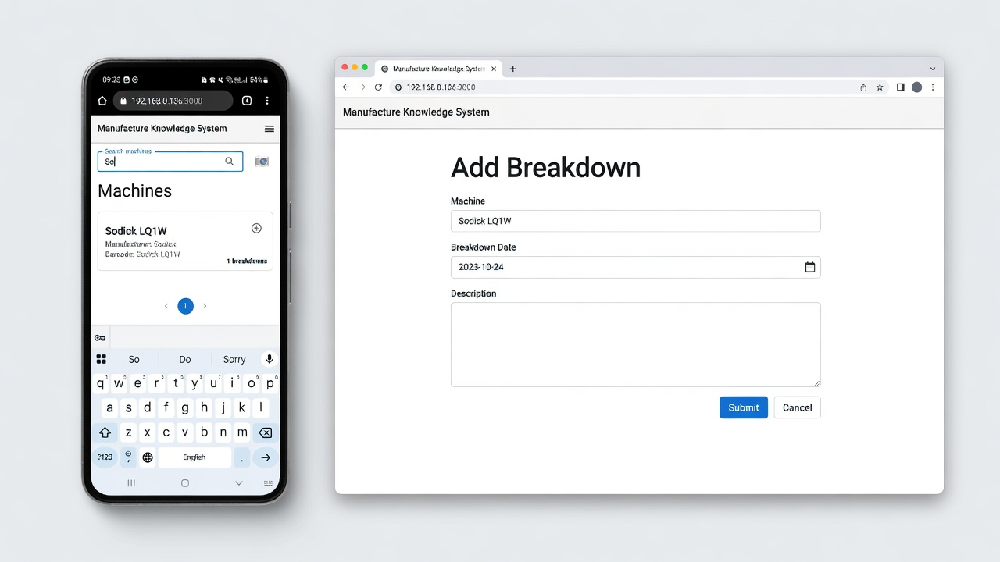
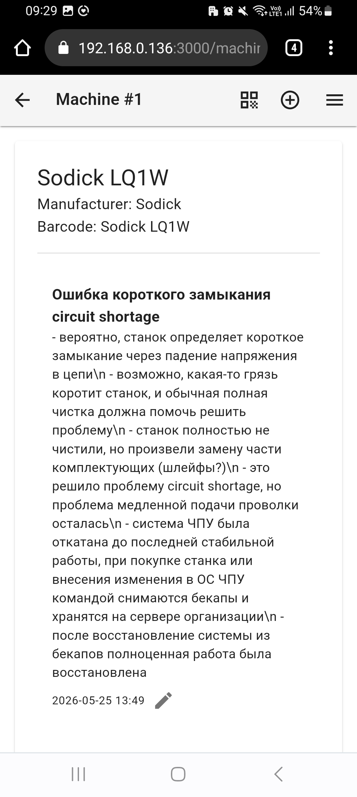

Open-source knowledge base for machine breakdown history and troubleshooting records.
Manage equipment inventory and see breakdown statistics.

Document failure symptoms and repair procedures.

Review previous incidents and solutions.

As a result, previous maintenance experience becomes hard to reuse.